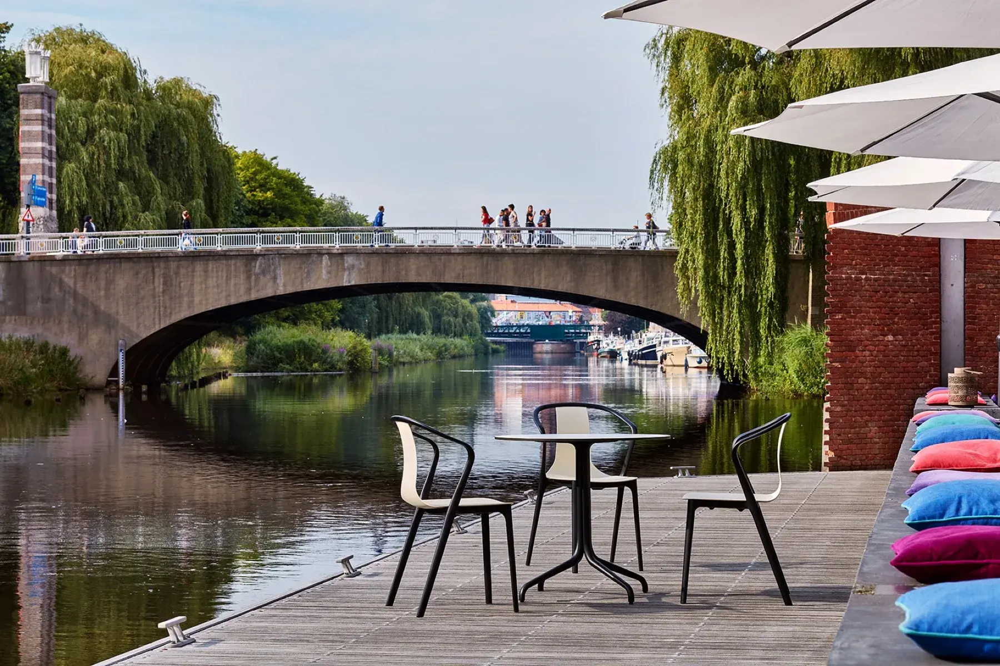
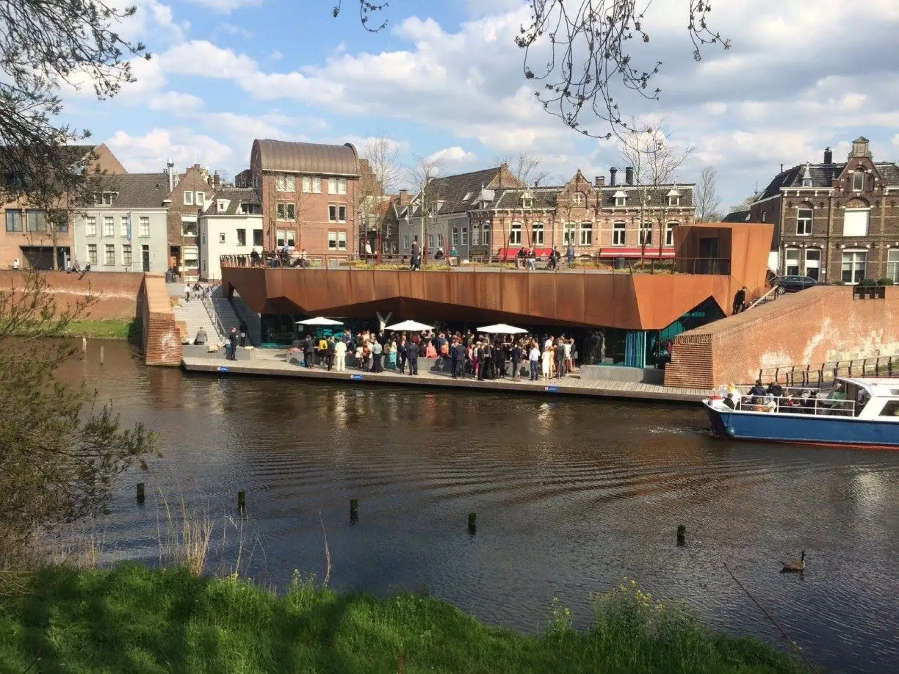
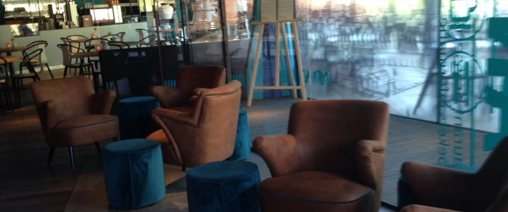

Een vlonder op het water, een dakpark erboven
Vijf eeuwen vestinggeschiedenis onder je voeten, de zon op je gezicht en bootjes die langsvaren.
Neerstrijken doe je hier zonder reservering
Het terras van Bolwerk ligt op een houten vlonder die over het water is gebouwd. Tafels reserveren we er bewust niet: wie er is, pakt het mooiste plekje dat vrij is.
- De hele middag zon op de vlonder
- Loungekussens op de steiger, voeten boven het water
- Parasols en een plaid als het frisser wordt


Aanleggen, opstappen, of gewoon kijken
De eigen aanlegsteiger is een komen en gaan van sloepen en rondvaartboten. Kom je over het water, dan leg je gewoon bij ons aan; verschillende rondvaarten door de binnenstad gebruiken de steiger als op- en afstappunt.
Eerst een rondje Binnendieze of over de singels, daarna borrelen op de vlonder: mooier wordt een middag Den Bosch niet.
Vijf eeuwen op wacht aan het water
In de stadsmuur staat hier de Koepoort, de uitvalspoort richting Vlijmen.
Omdat een poort kwetsbaar is, verrijst Bolwerk Sint-Jan: een driehoekig verdedigingswerk met de nieuwe Sint Janspoort.
Het bolwerk wordt grotendeels afgebroken voor een snellere afwatering; de resten verdwijnen onder de grond.
Op de oude fundamenten opent het huidige paviljoen: een cortenstalen gebouw dat in de stadswal verdwijnt, ontworpen door Van Roosmalen van Gessel Architecten, met een dakpark van ontwerpbureau OSLO.
Binnen eet je naast de originele middeleeuwse stadsmuur; het informatiecentrum over de Bossche vestingwerken is de buurman.

Licht, ruim en een muur van 1528
Door de vele ramen kijk je binnen overal op het water. De grote houten leestafel nodigt uit voor een krant met koffie en een échte Bossche bol; de loungehoek is er voor de trage zondagmiddag.
- De originele stadsmuur staat midden in de zaak
- Riante leestafel met kranten en tijdschriften
- Rolstoelvriendelijk en kindvriendelijk


Er ligt een park op ons dak
Het gebouw verdwijnt in de stadswal en draagt een openbaar dakpark met bomen en zitranden. Loop na de lunch de trap op: je kijkt er over de singel en de oude vestingwerken van de stad.
Het informatiecentrum Bolwerk Sint-Jan vertelt er het verhaal van de Bossche vestingwerken.
Zelf op de vlonder zitten?
Het terras is vrije inloop: op zonnige dagen kom je gewoon langs.